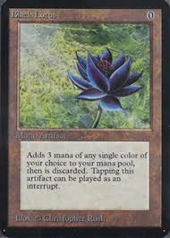
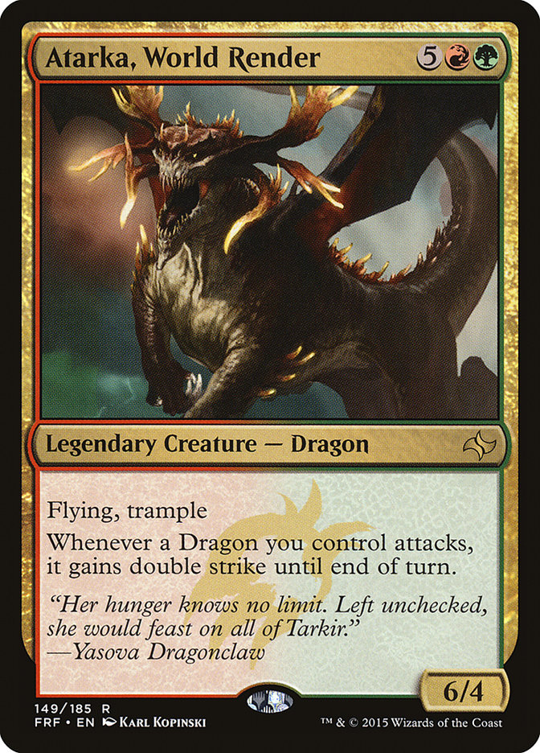

History of Magic
Magic the gathering was released on August 5, 1993. Magic was created by Wizards of the Coast. Magic was almost cancelled. In 1991, the company was busy with other projects. It waas also located inside of Peter Adkinson's basement. He is the owner and Ceo. Adkinson was approached by Dr. Richard Garfield who wanted Wizards to publish his board game design called "RoboRally". Adkinson liked the idea, however he didn't have the resources to make a board game. Adkinson asked Garfield to come up with a simple, portable game that can be played in minutes. Garfield came back with an idea for a card game, the very first version of Magic. The first set consisted of 295 black bordered cards.


My experience with magic
I've been playing Magic since 2015. at the time a new set of cards were released. I started out just watching my friends play the game while at school. I learned the basics of the game doing this. At the time I was fine just watchimg them play. I did this for about a week. One day, one of my friends gave me a deck and a paper that had the list of cards in the deck, and what set each card was from. I played with this deck for a while and it did work for a while. The only problem was that this deck was filled with duplicate cards that my friend used to play with against everyone else. This meant I was at a disadvantage no matter who I played against. I started to collect my own cards and made my own decks. .I still have that deck today.